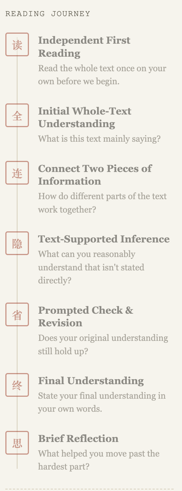

以追问引导主旨建构：生成式 AI 阅读教练的设计与迭代
Guiding Main-Idea Construction through Questioning: Designing a Generative AI Reading Coach
本文内容曾在科技与中文教学国际研讨会（TCLT 2026，线上）上报告：Designing a Generative AI Reading Coach to Scaffold L2 Chinese Discourse Comprehension: A Design-Based Study。
体验 Chinese Reading Coach → （学生使用版，进入时需输入中文名字）
问题：学生说“生词太多”，但困难不止于此
我的三年级会话与写作课（Conversation and Composition I）每周三次、每次五十分钟，课堂上没有专门的阅读训练时间。学期第一周，我请三位学生课外阅读一篇真实的留学生博客。三位学生都把生词列为最大的障碍：两位在阅读工具之外查词，一位把文章切成小段逐段“啃”，她说这样“花了很长时间，感觉很没效率”。
但从她们的回答中，我看到了另一个问题：三位学生中有两位，最初的表述只停留在文章的“话题”层面，说出了文章“关于什么”，却没有说出作者“在说什么”。问题不只是词汇，而是如何把局部的理解整合为全文的意义（Kintsch & van Dijk, 1978）。
为什么是 chatbot，又为什么要格外小心
一对一的陪读，教师很难每周为每位学生提供；AI 却可以根据学生当下的回答进行追问，并留下完整的过程记录。已有研究表明，依据教学原则设计的 AI 导师，学习效果可以优于课堂主动学习（Kestin et al., 2025）。但风险同样明显：缺乏教学护栏的生成式 AI 可能损害学习（Bastani et al., 2025）；当学生用 AI 替代自己的思考时，理解会变浅，基础较弱的学生受影响更大（Lehmann et al., 2024）。因此，我关心的不是“用不用 AI”，而是如何让 AI 帮忙，又不替学生思考。
设计：七步阅读旅程与四条原则

学生看到的界面是一个七步的阅读旅程：先独立读完全文；用一两句话说出初步理解；选两处信息说明它们的关系；做一个有文本依据的推断；回头检查最初的理解，决定保留、修改还是补充；用自己的话说出全文主旨；最后做简短反思。整个过程中，阅读教练不翻译全文，也不直接给出答案，只是追问。
背后有四条设计原则：先读后谈；逐级提示，不给答案；局部绕道，回到语篇——遇到生词时，学生可以选择“直接告诉我意思”“给我三个意思猜一个”或“给我线索自己推”，解决后回到原来的任务；以最初理解为锚点，在检查环节回头修正自己的理解。这些原则对应了支架教学中“依随、逐步撤除、把责任交还学生”的要求（van de Pol, Volman, & Beishuizen, 2010）。
迭代：每一次修改都来自数据
这是一项形成性实验，也就是在真实教学中边用边改，并把每次调整及其依据本身作为研究数据（Reinking & Bradley, 2008）。第一周我发现，学生处理生词全都发生在工具之外，记录中根本看不到；于是第三周起，我加入了“这不是精读，不需要每个字都懂”的说明和生词三选一机制，并在会后提供生词表。第七周，我又在阅读任务中附上词汇表，一位学生反馈：“这篇文章容易理解多了，词汇表真的很有帮助。”
TCLT 报告之后，我把工具进一步聚焦到主旨建构。现在的版本（Main-Idea Journey）请学生先说出对全文的第一印象，再选出最能概括全文的主旨，并用文中证据为自己的选择辩护。
观察到的变化
在 13 次对话中，有 11 次学生的主旨表述层次在同一次对话中得到提高。比如一位学生，最初只说“新能源车越来越受欢迎”，最后说出了“这个产业在政府支持下发展起来，现在已经可以自己站稳了”——从“关于什么”走到了“在说什么”。
学生也开始回到文本修正自己的理解。一位学生起初把装备花费理解为“让人不敢开始骑车的缺点”，阅读教练只问了一句：文章真的是这样说的吗？她回到原文，修正为“新手容易掉进花钱的陷阱，但骑车本身门槛并不高”。到第七周，那位曾把文章切成小段逐段阅读的学生说，下次她要先把全文扫一遍，抓住大意，再看细节。
反思
这一轮设计也有没做到的地方。最明显的是：学生越弱，阅读教练越容易替她把主旨说出来，这正是我需要改进的地方。生词三选一机制的使用也远低于预期，而且有迹象显示，学生仍会在工具之外寻求其他帮助。下一轮，我会把主旨环节改为逐级提示，从“作者关于它说了什么”，到“总的来说”“这说明”等结构线索，再到在三个句子中识别主旨，最后由学生自己重写；阅读教练不再替学生写出最终主旨。
回头看，我最想强调的一点是：学生说不出主旨，不等于没有理解。话题层面的初始表述，可以看作建构主旨的起点。AI 的价值，不是替学生理解，而是让学生自己的理解被看见、被追问、被修改。
参考文献
- Bastani, H., et al. (2025). Generative AI without guardrails can harm learning: Evidence from high school mathematics. Proceedings of the National Academy of Sciences.
- Kestin, G., et al. (2025). AI tutoring outperforms in-class active learning: An RCT introducing a novel research-based design in an authentic educational setting. Scientific Reports.
- Kintsch, W., & van Dijk, T. A. (1978). Toward a model of text comprehension and production. Psychological Review, 85(5), 363–394.
- Lehmann, M., Cornelius, P. B., & Sting, F. J. (2024). AI meets the classroom: When do large language models harm learning? arXiv preprint 2409.09047.
- Reinking, D., & Bradley, B. A. (2008). On formative and design experiments. Teachers College Press.
- van de Pol, J., Volman, M., & Beishuizen, J. (2010). Scaffolding in teacher–student interaction: A decade of research. Educational Psychology Review, 22, 271–296.